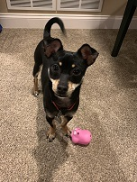

Tank, My pet dog
The dog in the picture is a ferocious dog weighing in at a incredible 13 pounds and more than capable of following you around and begging for food. Despite his occasional moments of briliance he truely is clueless. His favorite thing to do is impersonate a cat by climbing of furniture. Tank is currently a year old and loves to chew everything he can get to. He has multiple places he loves to try and hide things. They include:
- Under the dining room table.
- Behind the couch.
- Under my parents bed.
Tank loves to follow people and rarely takes a break. He also enjoys playing with anyone who is willing, but when nobody will play with him he will sometimes play on his own which can be quite depressing as he rolls around flinging toys trying to entertain himself. Sometimes though when no-one is running around for him to chase he will start to get into mischief which includes but is not limited to:
- Eating corks
- Chewing socks
- Finding food trash
- Interrupting everything
- Hiding(which means he's doing somethings else)